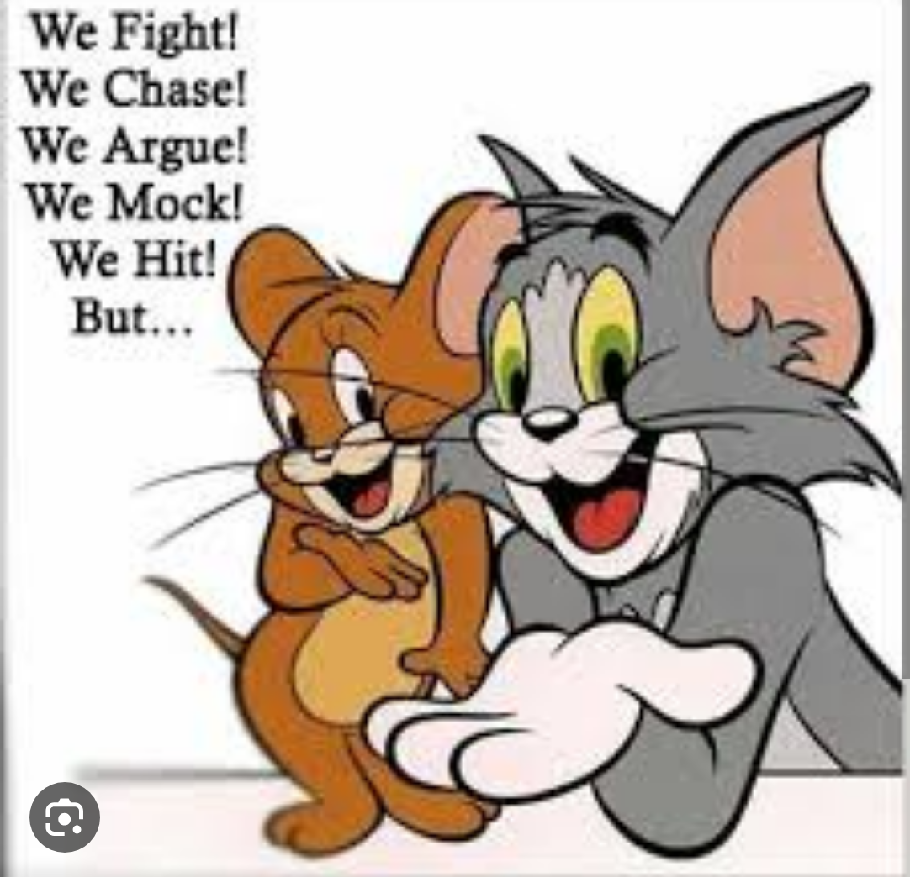

harshitha.com / india, AP
vsdkcjhsdcksljhcbjskldcjhvsxxjhbvbsjkdcgskxjn
are short, famous texts in English from classic sources like the Bible or Shakespeare. Some texts have word definitions and explanations to help you. Some of these texts are written in an old style of English. Try to understand them, because the English that we speak today is based on what our great, great, great, great grandparents spoke before! Of course, not all these texts were originally written in English. The Bible, for example, is a translation. But they are all well known in English today, and many of them express beautiful thoughts. List growth is the foundation for any successful SMS marketing program. The larger it grows, the more value you drive. We’ve built the industry’s most comprehensive set of subscriber growth tools to maximize the size of your audience and keep it growing. From text-to-win contests and SMS surveys to digital mobile coupons and loyalty rewards programs, this text message marketing platform has everything you need to connect with your audience in fun and meaningful ways.
are short, famous texts in English from classic sources like the Bible or Shakespeare. Some texts have word definitions and explanations to help you. Some of these texts are written in an old style of English. Try to understand them, because the English that we speak today is based on what our great, great, great, great grandparents spoke before! Of course, not all these texts were originally written in English. The Bible, for example, is a translation. But they are all well known in English today, and many of them express beautiful thoughts. List growth is the foundation for any successful SMS marketing program. The larger it grows, the more value you drive. We’ve built the industry’s most comprehensive set of subscriber growth tools to maximize the size of your audience and keep it growing. From text-to-win contests and SMS surveys to digital mobile coupons and loyalty rewards programs, this text message marketing platform has everything you need to connect with your audience in fun and meaningful ways.
are short, famous texts in English from classic sources like the Bible or Shakespeare. Some texts have word definitions and explanations to help you. Some of these texts are written in an old style of English. Try to understand them, because the English that we speak today is based on what our great, great, great, great grandparents spoke before! Of course, not all these texts were originally written in English. The Bible, for example, is a translation. But they are all well known in English today, and many of them express beautiful thoughts. List growth is the foundation for any successful SMS marketing program. The larger it grows, the more value you drive. We’ve built the industry’s most comprehensive set of subscriber growth tools to maximize the size of your audience and keep it growing. From text-to-win contests and SMS surveys to digital mobile coupons and loyalty rewards programs, this text message marketing platform has everything you need to connect with your audience in fun and meaningful ways.
jdshgfvhsxjhvc jkdjskldcjhvsxxjhbvbsjkdcg